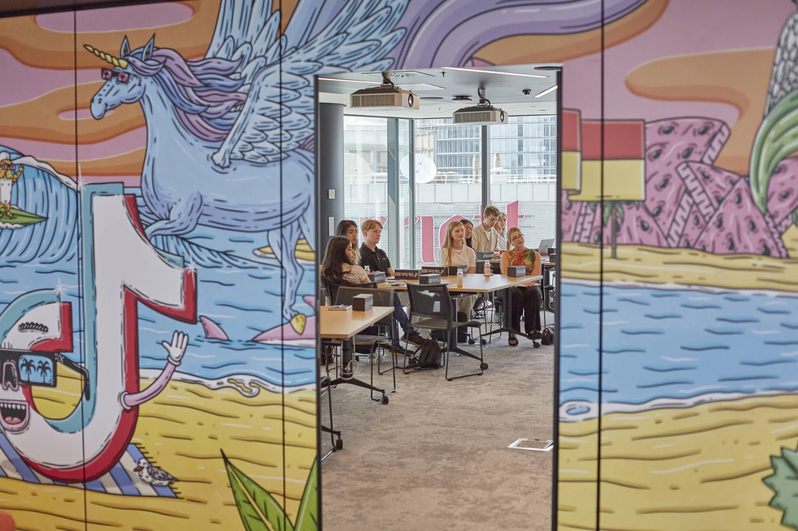
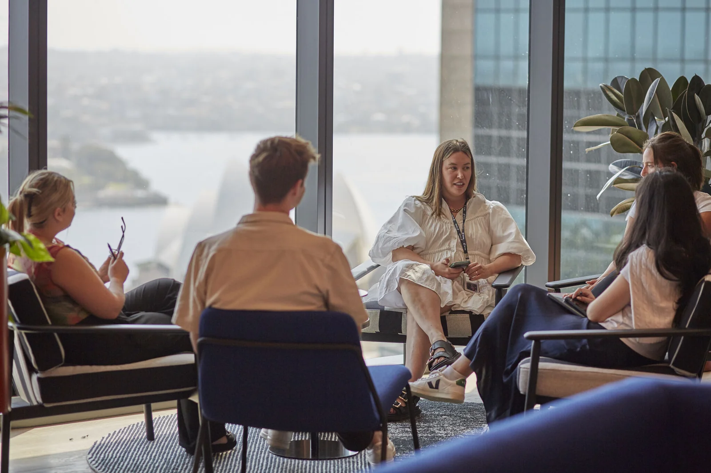
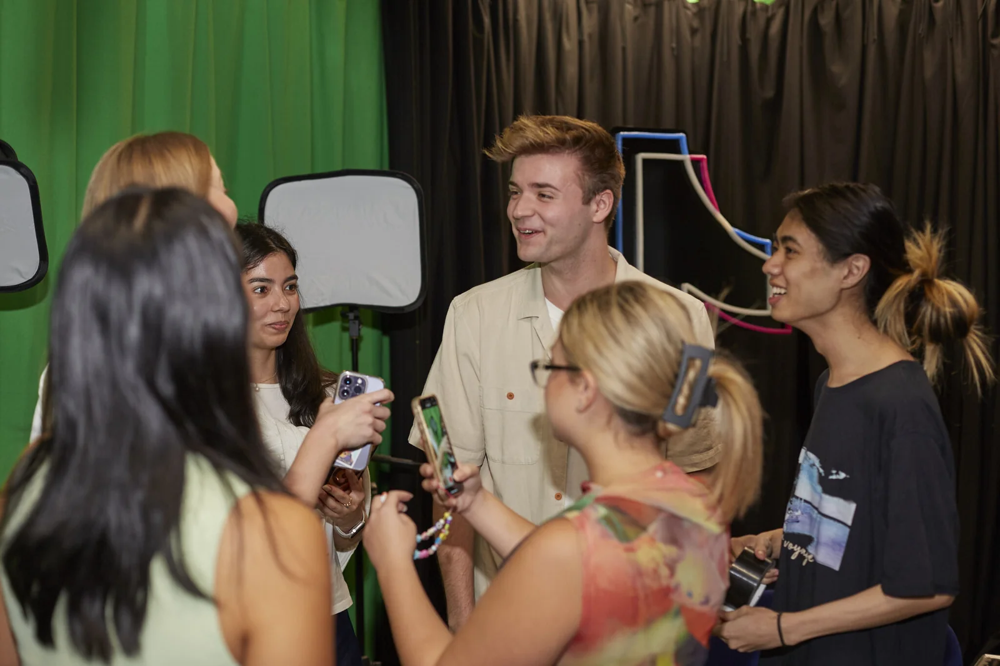

The MQU team at TikTok Sydney HQ, Sydney Harbour Bridge visible behind

Content best practices session

Inside TikTok HQ, Sydney

Production studio facilities
Macquarie University · 2023
The Macquarie University social media team became the first Australian university to be invited to TikTok's Sydney headquarters. We earned the invite by running one of the best-performing TikTok Lives during Open Day 2023.
During Open Day 2023, the Macquarie University social media team ran a TikTok Live that performed exceptionally well. The engagement was strong enough that TikTok Australia took notice, and we received an invitation to visit their Sydney headquarters - the first Australian university to get that call.
The whole team made the trip. We spent the day at TikTok HQ meeting their local team, getting a briefing on what performs best on the platform, learning about engagement strategy and live content, and getting a look through their Sydney studio facilities.
"First Australian university invited to TikTok HQ. We earned it."
The visit was both a recognition of the work we'd been doing and a genuine learning experience. TikTok walked us through their content best practices, explained what drives engagement on Lives, and gave us a tour of their production studio on-site. It was the kind of industry access that's hard to get anywhere else, and the insights fed directly back into how we approached content for the rest of our time at MQU.



What I took away
The session covered what actually drives performance on the platform. These are the key takeaways I applied to my work going forward.
Vertical First
Full-screen vertical content with good lighting. Shoot the way the platform is consumed - not landscape repurposed for mobile.
Short and Punchy
11-17 second loops perform best. All videos should be at least 6 seconds. Hook immediately and loop cleanly.
Grab Attention Fast
You have 2-3 seconds. The first frame needs to earn the next one. Use TikTok text for anything you want viewers to read.
Experiment with Formats
Post more, test more. The more formats you try, the better your picture of what connects with your specific audience.
Leverage Trends
Lean into relevant trends but add your own spin. Don't just replicate - find the angle that makes it yours and makes it relevant.
Think Like a New User
If your video came up on someone's FYP for the first time, would they watch it through? That's the question every piece of content needs to answer.